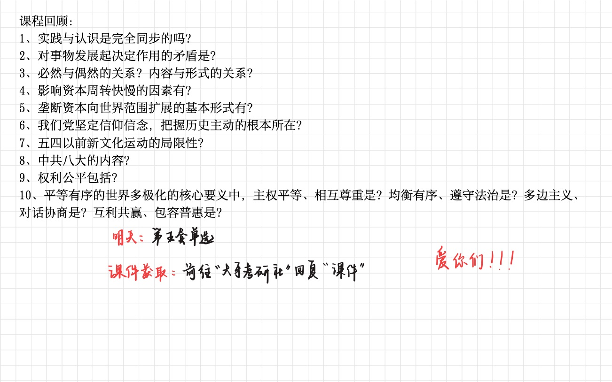

课程回顾原图

1、实践与认识是完全同步的吗？
不同步。实践是认识的基础，但认识具有相对独立性：它可能落后于实践，也可能超前于实践（科学预见）；二者是辩证统一，不是完全同步，“完全同步”是错误说法。
2、对事物发展起决定作用的矛盾是？
主要矛盾。在复杂事物的矛盾体系中，主要矛盾处于支配地位、对事物发展起决定作用；次要矛盾不起决定作用，矛盾的主要方面决定事物的性质。
3、必然与偶然的关系？内容与形式的关系？
①必然与偶然是对立统一：必然性存在于偶然性之中，通过大量偶然性表现出来并为自己开辟道路；偶然性是必然性的表现形式和补充，二者在一定条件下相互转化，所以要重视必然、把握规律，又不忽视偶然、善用偶然。②内容决定形式，形式反作用于内容并具有相对独立性，适合的形式促进内容发展、不适合的形式阻碍内容发展；形式不起决定作用，要注重内容、反对形式主义，同时善于利用合适的形式促进内容发展。
4、影响资本周转快慢的因素有？
关键因素有两个：一是资本周转时间（生产时间＋流通时间），二是生产资本的固定资本与流动资本的构成（固定资本比重越大，周转越慢）。所用资本与所费资本的差额、预付资本的大小不是关键因素。
5、垄断资本向世界范围扩展的基本形式有？
三种基本形式：商品资本输出、借贷资本输出、生产资本输出。技术资本输出不属于基本形式。
6、我们党坚定信仰信念，把握历史主动的根本所在？
“两个结合”，即把马克思主义基本原理同中国具体实际相结合、同中华优秀传统文化相结合。它是推进马克思主义中国化时代化的根本途径、我们取得成功的最大法宝，也是我们党坚定信仰信念、把握历史主动的根本所在。
7、五四以前新文化运动的局限性？
①方法上还是资产阶级形式主义的方法，缺乏马克思主义的批判精神，对东西方文化绝对肯定或绝对否定；②局限于知识分子的圈子，没有同广大工农群众相结合；③不能为中国人民提供一种有效的思想武器去认识和改造中国社会。
8、中共八大的内容？
1956年9月党的八大：①主要矛盾是人民对于建立先进的工业国的要求同落后的农业国的现实之间的矛盾，人民对于经济文化迅速发展的需要同当前经济文化不能满足人民需要的状况之间的矛盾；②主要任务是集中力量发展社会生产力、实现国家工业化；③经济建设方针是既反保守又反冒进、在综合平衡中稳步前进；④通过党执政后第一部党章，强调坚持民主集中制和集体领导、反对个人崇拜，扩大社会主义民主、健全社会主义法制。
9、权利公平包括？
包括三方面：①权利主体平等；②享有的权利特别是基本权利平等；③权利保护和权利救济平等。权利与义务对等不属于权利公平的内容。
10、平等有序的世界多极化的核心要义中，主权平等、相互尊重是？均衡有序、遵守法治是？多边主义、对话协商是？互利共赢、包容普惠是？明天：第五套单选爱你们！！！识课件数取：前往“大手考研社”回夏“课件”
①主权平等、相互尊重是根本原则；②均衡有序、遵守法治是必然要求；③多边主义、对话协商是关键路径；④互利共赢、包容普惠是发展方向。